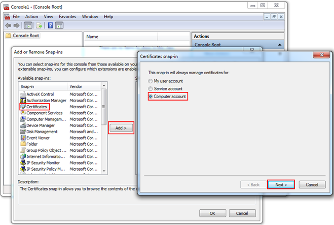
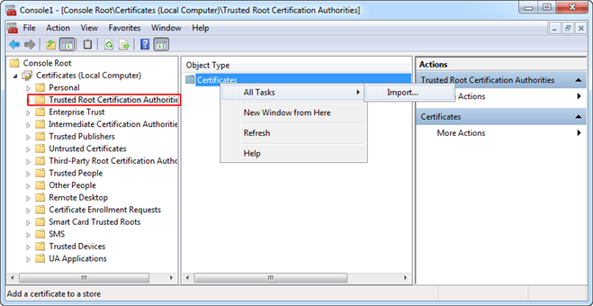
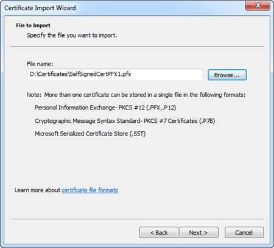
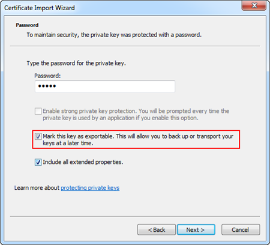
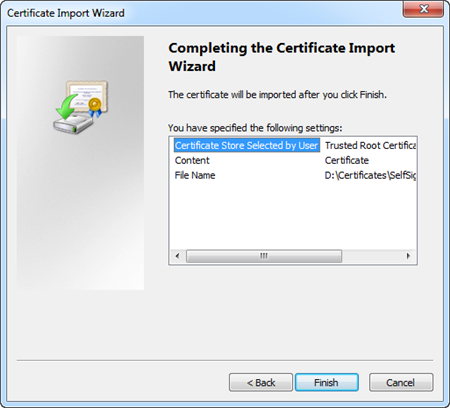

Import the Certificates in the Windows Store using MMC
- Open the Microsoft Management Console (MMC) from the Windows Start menu or command prompt.
NOTE: Only users with administrator privileges can use the MMC. If the UAC (User Account Control) is enabled, it may happen that you are prompted for administrator password or confirmation. - The MMC opens.
- On the File menu of MMC console, click Add or Remove Snap-in.
- The Add or Remove Snap-ins dialog box displays.
- Do the following to add the Certificates in the Add or Remove Snap-ins dialog box:
- From the list of Available snap-ins, select Certificates and click Add.
- In the Certificates snap-in dialog box that displays, select the option Computer account and click Next, and then Finish.
- In the Add or Remove Snap-in dialog box, click OK.

- The Certificate snap-in is added in the MMC.
- Next, in MMC, you need to import a .pfx certificate (root/self-signed). For this, in the MMC Console tree, select Certificates > Trusted Root Certification Authorities for importing the root and self-signed certificate.
- Under Object Type, select Certificates, and right-click, and from the menu that displays select All Tasks > Import to open the Certificate Import Wizard dialog box.

- In the Certificate Import Wizard dialog box, browse the certificate file to be imported. Click Next.
NOTE: When browsing the pfx file in the Open dialog box, make sure you have selected All Files (*.*) as file type. 
- Select the Mark key as exportable check box for self-signed certificate pfx file import. This allows you to back up or transport your keys at a later time.

- Click Next and then Finish.

- The selected certificate (root or self-signed) is imported successfully to the selected store.